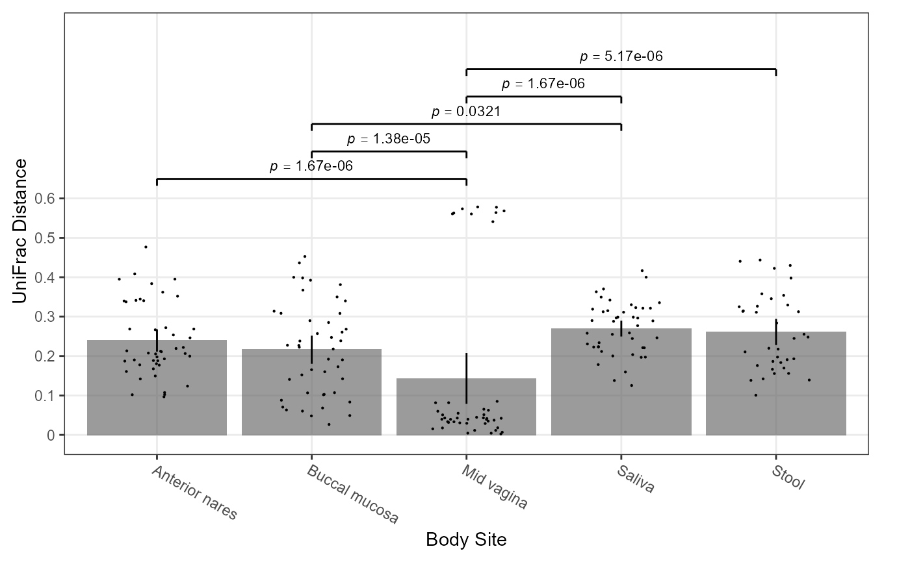
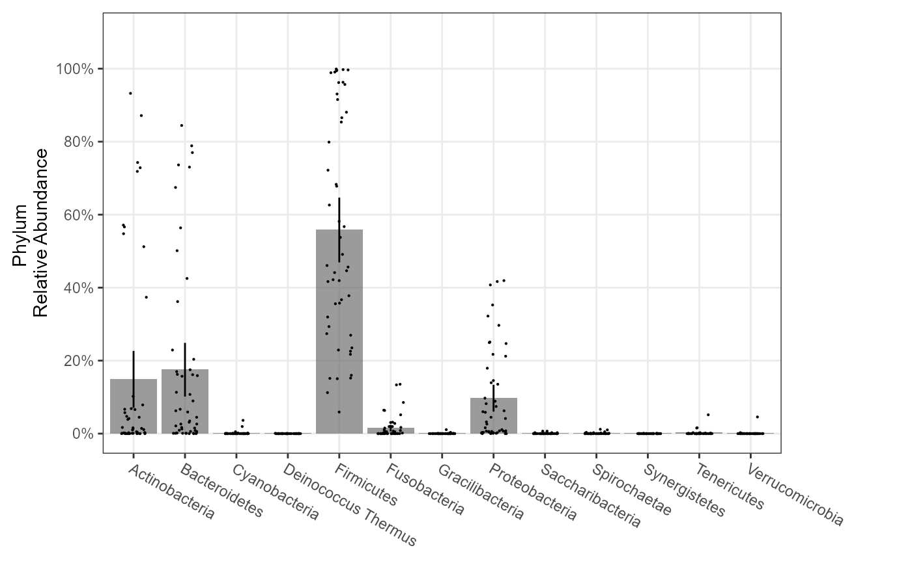
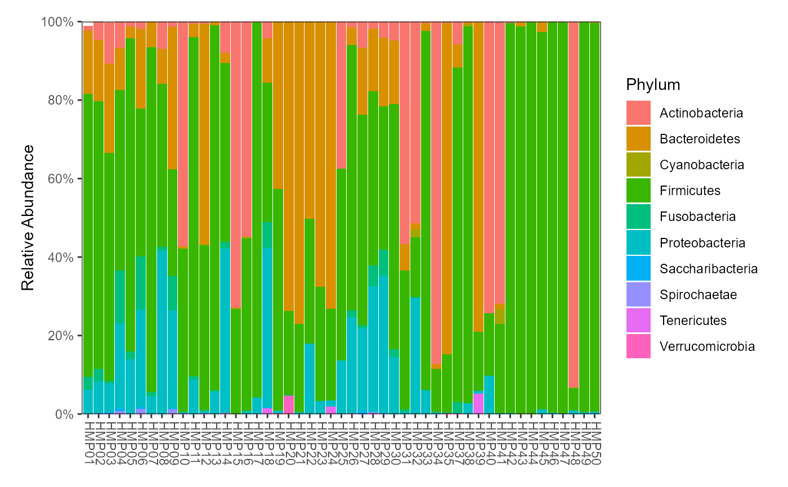

Provide two terms to plot() and it will automatically produce the
appropriate chart type. The terms that plot understands and valid
combinations are listed in the Details section. Not all parameters used by
all chart types.
# S3 method for BIOM plot( x, formula, layers = "rls", color.by = NULL, pattern.by = NULL, shape.by = NULL, label.by = NULL, sort.by = NULL, facet.by = NULL, colors = NULL, patterns = NULL, shapes = NULL, p.min = 0.05, p.adj = "fdr", se = "ci95", rline = NULL, xlab.angle = "auto", weighted = TRUE, rank = "auto", taxa = NULL, abbr = TRUE, other = FALSE, anno = "tmprf", gradient = heat.colors(20), normalize.rows = TRUE, dist = "euclidean", model = y ~ x, regr = lm, ... )
Arguments
| x | A BIOM object, as returned from read.biom. |
|---|---|
| formula | Combination of terms to plot, either in |
| layers | See "Layers" section for details. Options for super box
plots are box, bar (r), violin, dot,
strip, crossbar, errorbar, linerange, and
pointrange. Options for ordination plots are: point,
centroid, ellipse, and name for samples,
and mean, taxon, and arrow for taxa biplots.
Single letter abbreviations are also accepted. For instance,
|
| color.by, pattern.by, shape.by, label.by, sort.by, facet.by | Metadata
column to color, pattern, shape, label, sort, and/or facet by. If
that column is a |
| colors, patterns, shapes | Names of the colors, patterns, and/or shapes
to use in the plot. Available names can be found by running
|
| p.min | Minimum adjusted p-value to display on the plot with a bracket.
Set to |
| p.adj | Method to use for multiple comparisons adjustment of p-values.
Run |
| se | How to calculate min/max of the crossbar,
errorbar, linerange, and pointrange layers.
Options are range, ci (confidence interval), sd
(standard deviation), se (standard error), and mad
(median absolute deviation). You may optionally append a number to
ci to specify the confidence level, for instance
|
| rline | On rarefaction plots, highlight this rarefaction depth with a dashed line. (Default: NULL) |
| xlab.angle | How to rotate the tick labels on the x-axis. 'auto' (the default), automatically selects a rotation value. 0, 30, and 90 sets the angle to horizontal, angled, and vertical, respectively. |
| weighted | When employing a beta diversity metric, use the weighted
version. (Default: |
| rank | What rank of taxa to display. E.g. "Phylum", "Genus", etc. Run
|
| taxa | Which taxa to display. An integer value will show the top n
most abundant taxa. A value 0 <= n < 1 will show any taxa with at
least that level of statistical significance. A character vector of
taxon names will show only those taxa. (Default: |
| abbr | When selecting taxa by name, allow abbreviated 'taxa' values,
e.g. |
| other | Should non-selected taxa be displayed as an "Other" group?
(Default: |
| anno | Annotations to include on the plot. Options are: title,
method, p.value, r.squared, statistic,
aic, bic, and axes. See the 'stats' attribute of
the returned plot for the complete list, which changes based on the
test function used. Single letter abbreviations are also accepted.
(Default: |
| gradient | For heatmaps, the color gradient to use for the cells.
(Default: |
| normalize.rows | For heatmaps, should each row (taxon) have its
values rescaled from min-max to 0-1. (Default: |
| dist | For |
| model | For regressions, the formula to use in the smoothing function.
For example: |
| regr | For regressions, the smoothing function to use.
For example: |
| ... | Parameters for underlying functions.
See "Additional Parameters" section for details.
For heatmaps, |
Value
A ggplot2 plot. The computed data points and statistics will
be attached as attr(p, 'data') and attr(p, 'stats'),
respectively.
Shapes can also be given as their string values, defined in pch_table here:
https://github.com/tidyverse/ggplot2/blob/master/R/geom-point.r . Note that
some shapes have a colored outline given by color, some are filled with
color, and some are outlined in color and filled with fill. See
https://blog.albertkuo.me/post/point-shape-options-in-ggplot/ for details.
To expand the low end of the y axis, you can set y.trans = "sqrt" or
y.trans = "log1p". The former applies a square-root transformation,
and the latter plots log(y + 1). Both of these methods work well with data
that contains zeroes.
Terms
Terms come in the nine categories given below. The values are case-insensitive and can be unambiguously abbreviated.
Ordination Method (ORD):
PCoA,tSNE, orNMDS.Alpha Diversity Metric (ADIV):
OTUs,Shannon,Chao1,Simpson, orInvSimpson.Beta Diversity Metric (BDIV):
Manhattan,Euclidean,Bray-Curtis,Jaccard, orUniFrac.Distance Formula (DIST):
correlation,euclidean,maximum,manhattan,canberra,binary, orminkowski.Taxonomic Rank (RANK):
Kingdom,Phylum,Class,Order,Family,Genus,Species,Strain, orOTU. Supported ranks will vary by BIOM. Runtaxa.ranks(biom)to see the available options.Individual Taxon (TAXON): The name of a taxon from the BIOM's
taxonomy(). For instance,FirmicutesorPrevotella.Metadata (FACTOR or NUMERIC): The name of a column from the BIOM's
metadata(). For instance,`Body Site`orAge.Clustering Method (CLUST):
average,ward,mcquitty,single,median,complete, orcentroid. The following aliases are also understood:heatmap=complete,UPGMA=average,WPGMA=mcquitty,WPGMC=median, andUPGMC=centroid.Special:
Rarefied,Reads,Samples,.,stacked
Term Combinations
| Combination | Chart Type | Example |
| ADIV ~ . | Super box | plot(biom, Shannon ~ .) |
| ADIV ~ FACTOR | Super box | plot(biom, Shannon ~ `Body Site`) |
| BDIV ~ FACTOR | Super box | plot(biom, Bray ~ Sex) |
| RANK ~ . | Super box | plot(biom, Phylum ~ .) |
| TAXON ~ FACTOR | Super box | plot(biom, Firmicutes ~ Sex) |
| ADIV ~ NUMERIC | Line chart | plot(biom, Shannon ~ Age) |
| TAXON ~ NUMERIC | Line chart | plot(biom, Prevoltella ~ BMI) |
| BDIV ~ CLUST | Heatmap | plot(biom, UniFrac ~ ward) |
| RANK ~ CLUST | Heatmap | plot(biom, Genus ~ heatmap) |
| BDIV ~ ORD | Ordination | plot(biom, Bray ~ NMDS) |
| RANK ~ stacked | Stacked bar | plot(biom, Family ~ stacked) |
| Rarefied ~ Reads | Rarefaction | plot(biom, Rarefied ~ Reads) |
| Rarefied ~ Samples | Rarefaction | plot(biom, Rarefied ~ Samples) |
| Rarefied ~ ADIV | Rarefaction | plot(biom, Rarefied ~ Shannon) |
See also
Examples
plot(biom, Shannon ~ Sex, layers="vb", color.by="Body Site")plot(biom, Simpson ~ `Body Site`, layers="p", color.by="Sex", xlab.angle=30)# Ordination plot(biom, bray ~ nmds, color.by="Body Site")#> Error in layers[["labs"]]: subscript out of bounds# Dissimilarity boxplots plot(biom, UniFrac ~ `==Body Site`)# Dissimilarity Heatmap plot(biom, UniFrac ~ heatmap)# Taxa abundance boxplots plot(biom, Phylum ~ .)# Taxa stacked abundance plot(biom, Phylum ~ stacked)# Taxa abundance heatmap plot(biom, Phylum ~ heatmap)